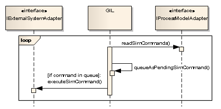
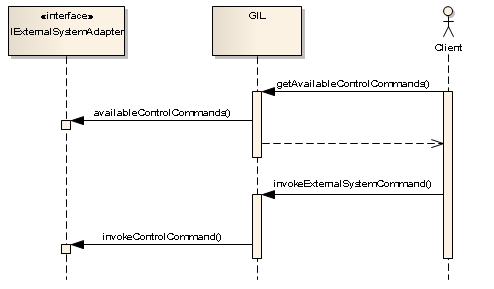
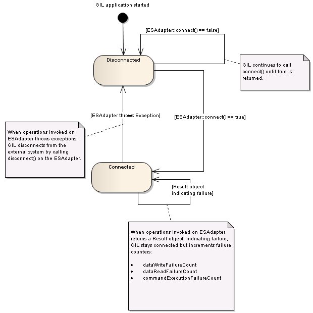

Adapters for attaching external systems and process models to GIL is quite similar. This document has focus on the ES-adapter development but most is applicable also to PM-adapter development.
Adapter for an external system (ES-adapter) is developed by implementing the IExternalSystemAdapter interface.
Adapter for a process (PM-adapter) model is developed by implementing the IProcessModelAdapter interface.
Please also see the ExampleESAdapter.java and ExamplePMAdapter.java for example implementations.
In the adapter interfaces there are a number of operations. Depending on requested features it may be that only parts of these operations have to be implemented. Some operations may be left just throwing an UnsupportedOperationException as default. Other must return default values e.g. an empty collection if no control commands are available.
ES-adapters must also return a capabilities object when getCapabilities() is called. The capabilities object tells GIL the features of the current ES-adapter implementation.
At startup GIL calls setup() on the ES-adapter. In this call the ES-adapter is handed a specification describing all signals to be transferred between the process model and the external system.
Adapters are handed implementation specific configuration from GIL in the setup() call.
GIL reads the gil.config.xml configuration file and parses the 'adapterSettings' section containing the adapter specific configuration parameters. A Parameters object is created and handed to the adapter.
GIL will continuously call readSignalData() on the ES-adapter when connected.
readSignalData() returns 'null' until new data is available. New data is added to a transfer queue. Data is retrieved from this queue by a different thread handling the data writes to the Process Model. If more data is added to the queue before the previous data has been written, GIL will drop the data and increment the counter of dropped frames.Simulator commands are executed on the ES-adapter as a result of an event occurring in the process model.
GIL does continuously call readSimCommands() on the PM-adapter. This operation returns the events that have occurred since the last call as a collection of simulator commands. These commands are added as pending commands to a queue. Commands are retrieved from this queue by a different thread handling the execution of the commands on the ES-adapter by calling executeSimCommand().
Control commands are executed on the ES-adapter as a result of a call on the GIL http API or web interface.
An implementation of ES-adapter may or may not supply control commands. By implementing availableControlCommands() a list of possible control commands and there parameters can be supplied to GIL. If there are no control commands available an empty collection shall be returned.
GIL will call invokeControlCommand() to execute control commands.
Methods on adapters may in many cases signal failures by either returning a Result object indicating failure or throwing an exception. The severity of throwing an exception is higher than returning a failure Result object, causing GIL to reconnect to the external system.
GIL calls tearDown() on the adapter on exit or when there is a complete restart. On restart, the adapter shall expect a setup() call following the tearDown() call.